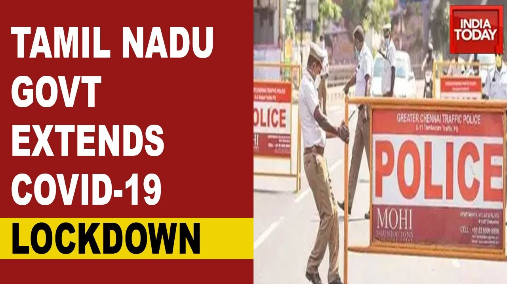

Many states extend lockdowns
 Citing the capital’s high positivity rate, Delhi Chief Minister Arvind Kejriwal on Sunday extended Delhi’s lockdown for another week. The lockdown will now be in place till 5 am on May 17. During this period, metro services will also remain suspended. Haryana too extended its statewide lockdown till May 17, introducing stricter curbs. Meanwhile, in the fourth such extension so far in the past few days, the Uttar Pradesh government Sunday decided to extend the partial lockdown, called “closure” by state officials, till 7 am on May 17. The restrictions were set to be lifted tomorrow morning.